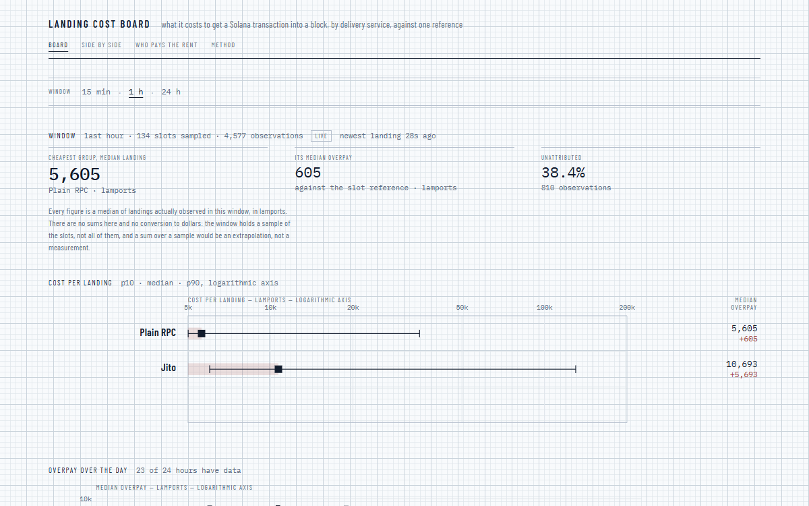

17.8 s
The board
Every sampled mainnet slot, attributed to a delivery group and priced against that slot's reference. A landing shows up on the public board 17.8 s after confirmation (p95).
Solana · transaction delivery
Jito, Nozomi, bloXroute and plain RPC each charge for delivery in their own way. FairLane measures what each one actually took on mainnet, against the same slot, and puts the numbers side by side.
npm install @fairlanerouter/sdk
Reading the last hour…
Which lane to take for your transaction is a question with an intent — ask the API.
17.8 s
Every sampled mainnet slot, attributed to a delivery group and priced against that slot's reference. A landing shows up on the public board 17.8 s after confirmation (p95).
186 ms
Describe a transaction before it exists — program, compute units, cheap or fast — and get back a group, a tip, a priority fee and the full expected cost, with the age of the data behind it. 186 ms p95.
1.54 s
One request issues an access key: no sign-up, no e-mail, no personal data. 120 requests a minute with a key, 10 without.
Every 100th mainnet slot is read in full. Each successful non-vote transaction in it is a landing, with its base fee, priority fee and tip — a failed transaction did not land, and a vote pays nothing for delivery.
A tip to a service's own accounts names its group. Services that share accounts cannot be told apart on-chain, so they form one group — the unit of every comparison.
Each slot gets one reference: the 10th percentile of full landing cost among its successful non-vote transactions, computed only when the slot has at least 50 of them. Vote transactions are always excluded — they would pull the reference to almost zero.
Overpay is what a landing cost above its slot's reference. Comparing overpay, not tips, keeps a busy slot from looking like an expensive service.
| Criterion | Budget | Measured | Date |
|---|---|---|---|
| Landing visible on the board after confirmation (p95) | ≤ 60 s | 17.8 s | 2026-09-22 |
| First screen with data on a 3G connection | < 2 s | 1.76 s | 2026-09-22 |
| Answer to an advice request (p95) | < 300 ms | 186 ms | 2026-09-28 |
| Issuing an access key, no personal data | < 10 s | 1.54 s | 2026-09-24 |
Measured values are recorded in the release notes of each tag: v0.1.0, v0.2.0.

null rather than a number that only looks like a probability.